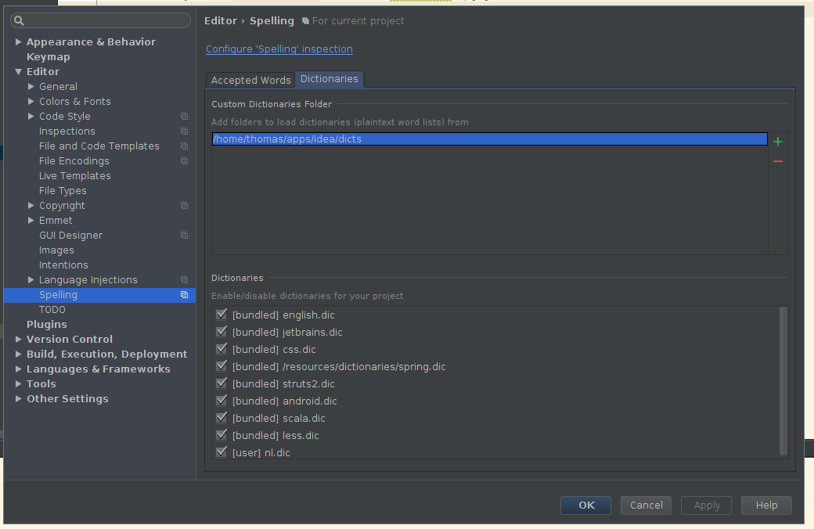

I got really annoyed by the spell checking feature of IntelliJ IDEA, since I’m a native Dutch speaker and I have a few projects where the main language is Dutch. I originally planned to just disable it after I noticed there was no Dutch dictionary available, but I decided to try and create one.
On this page, we find some helpful information on dictionaries:
Correctness of spelling is checked against pre-defined dictionaries (as of now, jetbrains.dic and english.dic), and any number of user-defined custom dictionaries.
A user dictionary is a textual file with the dic extension, containing the words you want to be accepted by the Typo inspection as correct. The words in such dictionaries are delimited with the newline.
We can install an appropriate aspell dictionary:
$ sudo apt-get install aspell-nl
[sudo] password for thomas:
Reading package lists... Done
Building dependency tree
Reading state information... Done
The following NEW packages will be installed:
aspell-nl
0 upgraded, 1 newly installed, 0 to remove and 5 not upgraded.
Need to get 775 kB of archives.
After this operation, 850 kB of additional disk space will be used.
Get:1 http://ftp.belnet.be/debian/ testing/main aspell-nl all 1:2.10-2 [775 kB]
Fetched 775 kB in 1s (390 kB/s)
Selecting previously unselected package aspell-nl.
(Reading database ... 228366 files and directories currently installed.)
Preparing to unpack .../aspell-nl_1%3a2.10-2_all.deb ...
Unpacking aspell-nl (1:2.10-2) ...
Setting up aspell-nl (1:2.10-2) ...
Processing triggers for dictionaries-common (1.23.17) ...
aspell-autobuildhash: processing: nl [nl].
Now we can dump the contents of the dictionary to a file:
$ aspell -d nl dump master > nl.dic
To import this dictionary, it needs to be in a “dictionary folder”. Thus I created a folder dicts in my IDEA intstallation folder (the folder name is arbitrary):
$ mkdir ~/apps/idea/dicts
$ mv nl.dic ~/apps/idea/dicts
In IDEA, go to Settings > Editor > Spelling > Dictionaries, and click on the plus sign to add the dictionary folder. After adding, you can immediately start using it.
